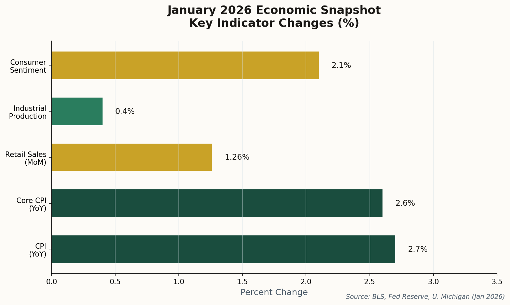
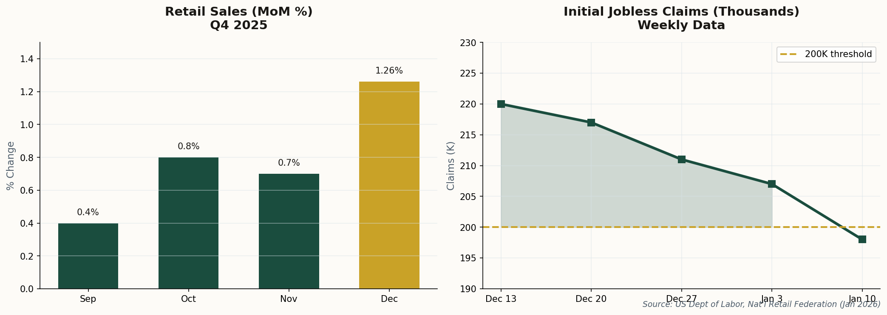
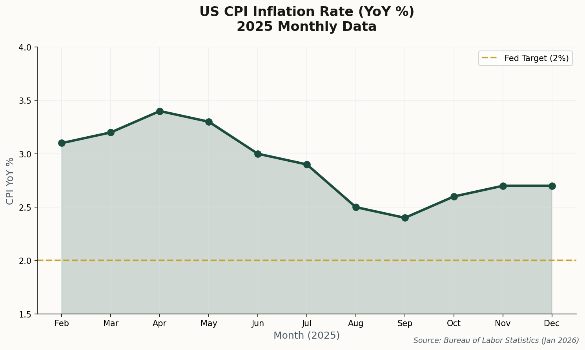

The January numbers are in—and they're telling a consistent story. Consumer spending surged, jobless claims plunged below 200K, and industrial production surprised to the upside. If this is a recession, someone forgot to tell the economy.

Key economic indicators point toward continued expansion as 2026 begins
The manufacturing sector—that laggard that everyone had written off—just posted a 0.4% gain in December, handily beating the consensus expectation of 0.1%. Manufacturing output itself rose 0.2%, defying forecasts of a decline.
Capacity utilization ticked up to 76.3%, still below historical peaks but trending in the right direction. For an economy that was supposedly teetering on the edge of recession just six months ago, these numbers paint a picture of quiet resilience.
The takeaway: The "manufacturing recession" narrative is losing steam. The sector isn't booming, but it's stabilizing—and that's all the soft-landing bulls needed to hear.
The preliminary University of Michigan Consumer Sentiment Index for January jumped to 54.0, up from 52.9 in December—a four-month high. The improvement was driven largely by lower-income households, suggesting that easing inflation is finally reaching the consumers who felt it most acutely.
There's a catch: long-term inflation expectations edged up to 3.4%, which will raise eyebrows at the Federal Reserve. Higher inflation expectations can become self-fulfilling prophecies if consumers start demanding wage increases to compensate.
Still, sentiment rising alongside sticky inflation expectations is an unusual combination—one that suggests Americans are growing confident they can handle higher prices, rather than expecting them to vanish.
As the first major bank to report Q4 earnings, JPMorgan Chase set the tone for the sector—and it was cautiously optimistic. Net revenue of $45.8 billion beat estimates, up 7% year-over-year, with EPS of $4.63 clearing the bar despite a profit dip.
The wrinkle: a $2.2 billion credit reserve build, suggesting management is preparing for potential loan losses. That's prudent risk management, not panic—but it's worth watching as a leading indicator of credit stress.
"We remain committed to future growth investments."
Translation: Jamie Dimon isn't battening down the hatches. When the biggest bank in America is still investing for growth, it's hard to make the doom-and-gloom case stick.

Consumer spending and labor market strength continue to defy recession forecasts
Initial jobless claims fell to 198,000 for the week ending January 10—below the psychologically significant 200K threshold and well under the 215,000 consensus estimate. The four-week moving average declined to 205,000.
Sub-200K claims numbers are rare. They signal an economy where employers are hoarding labor, reluctant to let go of workers they fought so hard to hire during the post-pandemic scramble. It's the kind of labor market tightness that makes the Fed nervous about wage-driven inflation—but also makes recession talk look increasingly disconnected from reality.
Context: The last time we saw claims this low was late 2022, right before the Fed's most aggressive hiking campaign in decades. Different environment, same message: Americans are employed and staying that way.
The American consumer finished 2025 with a flourish. Total retail sales (excluding auto and gas) jumped 1.26% month-over-month in December, capping a holiday season that grew 4.1% compared to 2024.
"Consumers prioritized value and utilized credit to drive a holiday season that exceeded expectations."
That "utilized credit" part deserves scrutiny. Credit card debt has been climbing, and delinquencies are ticking up—though from historically low bases. For now, consumers are spending; the question is whether they're borrowing from future consumption or genuinely flush with cash.
Core retail sales rose 1.6% month-over-month, suggesting the strength wasn't just holiday-driven. This is an economy where people are still willing to open their wallets.

Inflation continues its slow descent, though the final stretch to 2% may be the hardest
2.7%
CPI YoY
2.6%
Core CPI
+0.3%
Monthly
The Consumer Price Index rose 2.7% year-over-year in December 2025, with core CPI (excluding food and energy) at 2.6%. Progress, but not victory—the Fed's 2% target remains tantalizingly out of reach.
The usual suspects are to blame: shelter costs (+3.2%) and food prices (+3.1%) continue to run hotter than headline inflation. Until the housing market cools further and food supply chains fully normalize, that last mile to 2% will be a grind.
What it means for rates: The Fed has room to cut, but not much urgency. Expect a measured pace of easing in 2026—no dramatic pivots, no emergency moves. This is the "soft landing" everyone hoped for: boring, gradual, and deliberate.
The Big Picture
Every major data point this week pointed in the same direction: the US economy is slowing, but not breaking. Inflation is sticky, but manageable. The labor market is tight, but not overheating. Manufacturing is stabilizing, not collapsing. Consumers are spending, banks are lending, and businesses are investing.
This is what a soft landing looks like—not a dramatic rescue, but a long, uneventful glide path. The recession that everyone predicted in 2023, then 2024, then early 2025, keeps getting pushed further out. At some point, the forecasters will either be right or quietly move on to the next prediction.
For now, the data is clear: the American economy enters 2026 in better shape than almost anyone expected a year ago. That doesn't mean the risks have vanished—credit card debt, geopolitical uncertainty, and inflation expectations all bear watching. But the base case is no longer recession. It's continued growth, however modest.
Sometimes the most surprising outcome is the boring one.